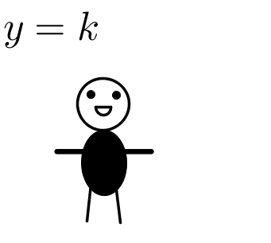

Tipos de AprendizadoVocê Sabia que existem 4 tipos principais de aprendizado?
Aprendizado Visual
Costumam falar rápido e interromper outras pessoas
Aprendem ao ver imagens e diagramas

Precisam de silêncio quando estudam
Imaginam conceitos a partir de imagens
Fazem anotações detalhadas
*Experimente pressionar C ou B
*Experimente pressionar D para salvar suas anotações
Gostam de sentar nas primeiras carteiras da sala de aula
Aprendizado Auditivo
Aperte o Play
Falam mais lentamente e explicam bem conceitos e teorias
Pressione R para iniciar R para pausar e Z para realizar download da gravação.
Ligue o Microfone
Possuem a tendência de serem ouvintes naturais
Repetem as coisas em voz alta
Pensam de forma linear
Leem lentamente
Preferem ouvir, ao invés de ler informações
Aprendizado Sinestésico
Falam mais lentamente
Aprendem quando fazem ou resolvem os problemas na prática
Gostam de abordagens práticas de ensino
Não conseguem ficar parados por muito tempo
Fazem intervalos quando estão estudando
Veja um vídeo para ficar mais atento :D
Sofrem de períodos curtos de falta de atenção
Aprendizado Escrita e Leitura
Há ainda outro tipo de aprendizagem, ainda não confirmado cientificamente como os três primeiros,
mas defendido por muitos pedagogos e próprios alunos. Esse tipo de aluno é aquele que gosta de aprender
lendo e escrevendo os conteúdos.